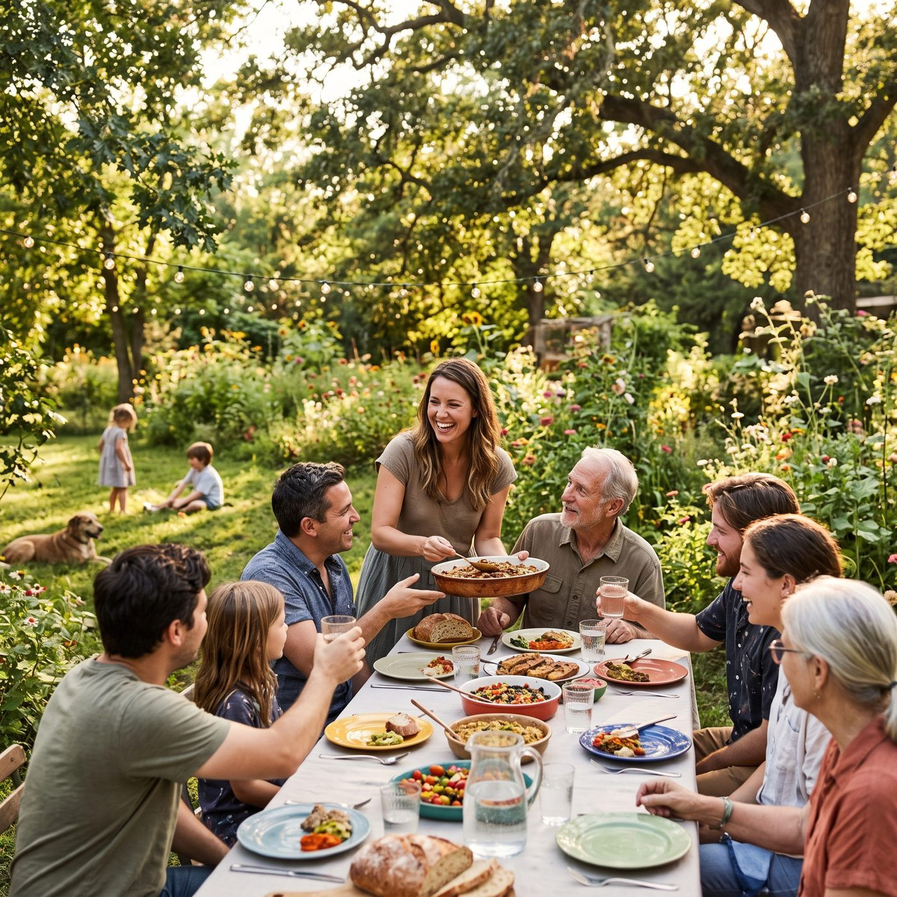

01
Everything looks beautiful
“When you live with a grateful heart, everything around you looks beautiful, makes you happy, and allows you to share that happiness with others.”
Gratitude changes how we see. It turns an ordinary table into a feast, and the happiness it brings is never meant to stay with us alone — it is meant to be shared.